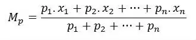

| |
Trabalho de MAC118 - 2021 Aula 03 - Medidas de tendência central: Média
Apresentação
Em estatística, uma Medida de Tendência Central é um valor central ou valor típico para uma distribuição de probabilidade. As medidas de tendência central mais comuns são a Média, a Mediana e Moda.
Tendências centrais podem ser calculadas tanto para um número finito de valores quanto para uma distribuição teórica, a exemplo da distribuição normal. Ocasionalmente autores usam tendência central (ou centralidade), significando "a tendência de dados quantitativos de se agruparem ao redor de um valor central.". Autores podem julgar se dados têm tendência central forte ou fraca se baseando na dispersão estatística, medida pelo desvio padrão ou algo similar.
Esses tipos de medidas são utilizadas dentro da estatística descritiva para indicar a localização dos dados.
Média Aritmética
A média aritmética nada mais é do que a soma de todos os valores da base de dados dividida pelo número de elementos no total.
A equação matemática que a representa é:

Exemplo iVprog
Abaixo apresentamos um exemplo da programação no iVprog para calcular a média aritmética de 2 valores "a" e "b" que serão digitados pelo usuário:

Atividade
Sabemos que há também a Média Ponderada, na qual cada dado é atribuído e multiplicado por um peso. A soma desses elementos é então dividida pelo somatório de todos os pesos, da seguinte forma:

Agora que você sabe o que é Média Ponderada, realize a seguinte atividade:
A média final da disciplina de Gravitação tem peso 1 para Atividade de Sala (AS) , 2 para Trabalho para Casa (TC) e 3 para Trabalho Final (TF).
Crie um programa que leia as notas do usuário (AS, TC e TF), compute sua média ponderada e imprima essa média.
Atenção: nesta atividade use uma variável auxiliar (poderia ter nome med) para receber o resultado da média (isso seria necessário se tiver que usar essa média para outras operações, como computar o desvio padrão).
Entrada esperada: 3 números inteiros AS, TC e TF (tipo int).
Saída esperada: um número inteiro (tipo int), correspondente à Média Ponderada inteira entre os valores digitados pelo usuário.
Validação:
|
AS |
TC |
TF |
Média Ponderada |
|
7 |
8 |
9 |
8 |
|
2 |
5 |
10 |
7 |


|
Trabalho de MAC118 - 2021 - Prof. Leônidas O. Brandão